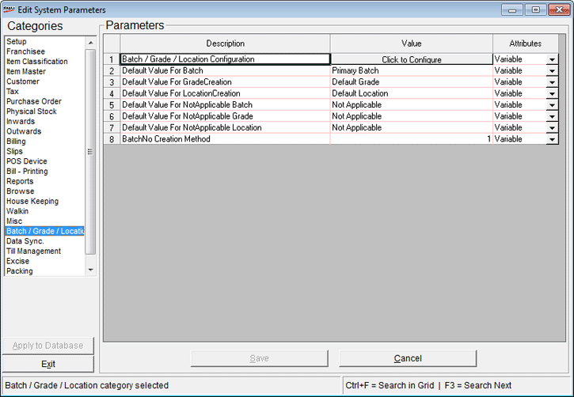
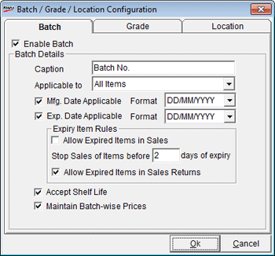
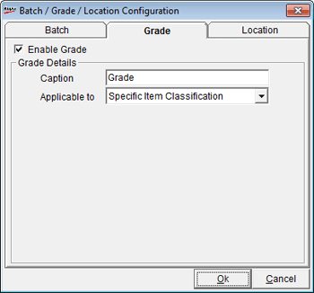
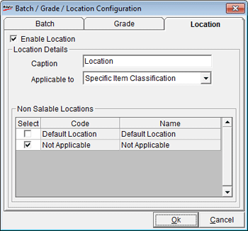

Batch, Grade & Location Management allows businesses to categorise items based on manufacturing batches, item qualities and storage locations.
This option is used to enable Batch , Grade and Locations.
How to reach: Setup > General > System Parameters > Batch/Grade/ Location
The Edit System Parameters window is displayed.
Click Batch / Grade / Locations to display the Parameters as shown.

Click to Configure: Click to display Batch /Grade/Location Configuring screen.
The Batch configuration screen is displayed as shown.

Enable Batch: Select to enable batch
Batch Details
Caption: Enter the caption to be displayed in the transaction grid.
Applicable to: Select to apply batch to All items or Specific items Classification.
Note: If batch is enabled for Specific items Classification then in Item Classification screen batch has to be manually configured for the corresponding class12 combo.
Mfg. Date Applicable: Select to accept manufacturing date.
Format: Select the format in which the manufacturing date has to be displayed.
Exp. Date Applicable: Select to accept expiry date.
Format: Select the format in which the expiry date has to be displayed.
Expiry item Rules
Allow Expired Items in Sales: Select to sales of expired items.
Stop Sales of Items before days of expiry: Enter the number of days.
Allow Expired items in Sales Returns: Select to allow accepting of expired items during Sales Returns
Accept Shelf Life: Select to accept shelf life duration.
Maintain Batch-wise Prices: Select to accept batch wise prices.
The Grade configuration screen is displayed as shown.

Enable Grade: Select to enable grade
Caption: Enter the caption to be displayed in the transaction grid.
Applicable to: Select to apply grade to All items or Specific items Classification.
Note: If grade is enabled for Specific items Classification then in Item Classification screen grade has to be manually configured for the corresponding class12 combo.
The Location configuration screen is displayed as shown.

Enable Location: Select to enable location
Caption: Enter the caption to be displayed in the transaction grid.
Applicable to: Select to apply location to All items or Specific items Classification.
Note: If location is enabled for Specific items Classification then in Item Classification screen location has to be manually configured for the corresponding class12 combo.
Non Salable Location: Select the location to be configured for nonsalable items. The items in this location cannot be used in billing.